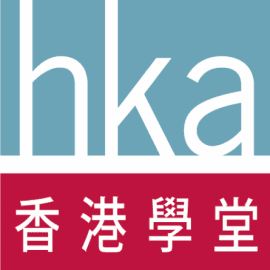
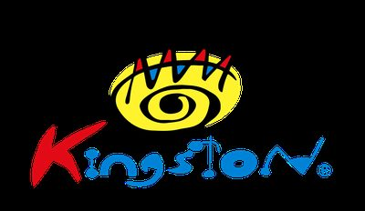
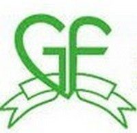
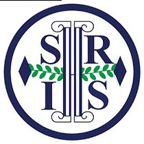
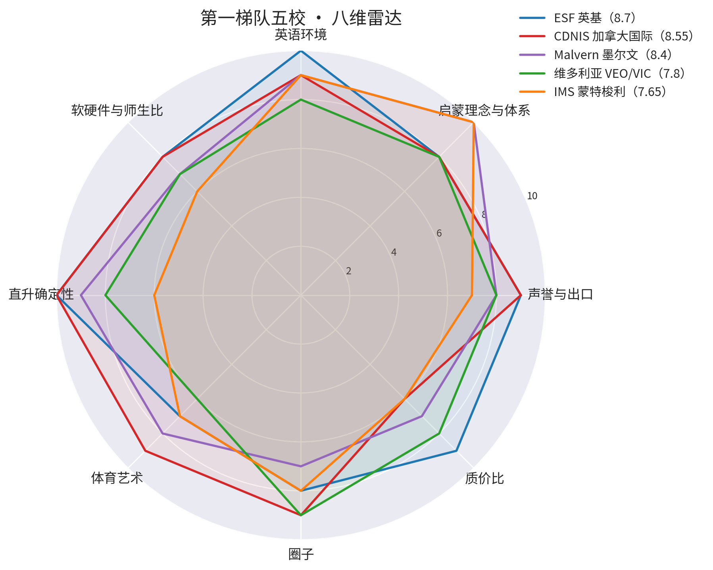
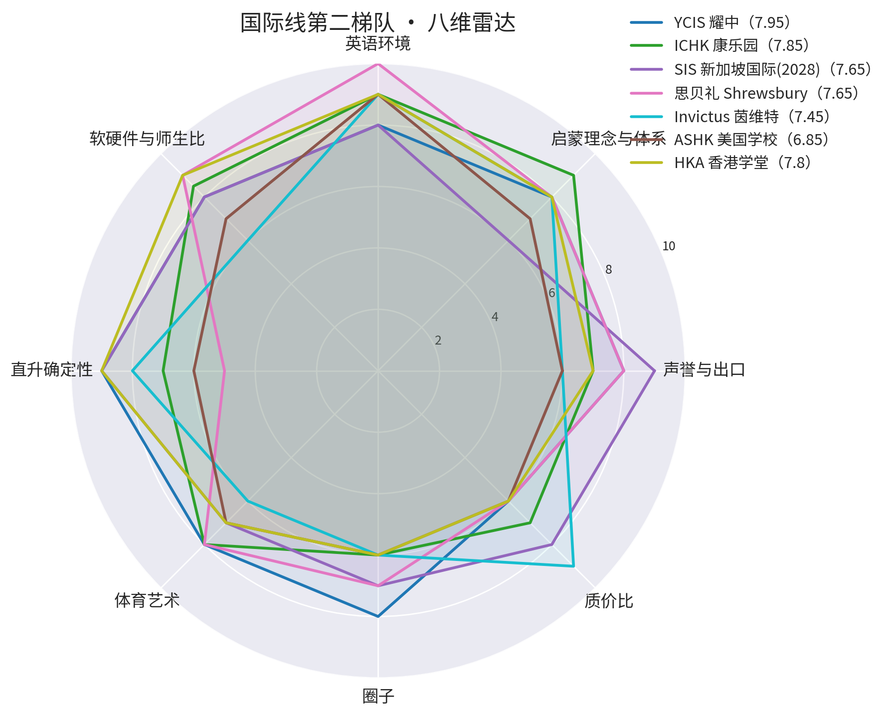
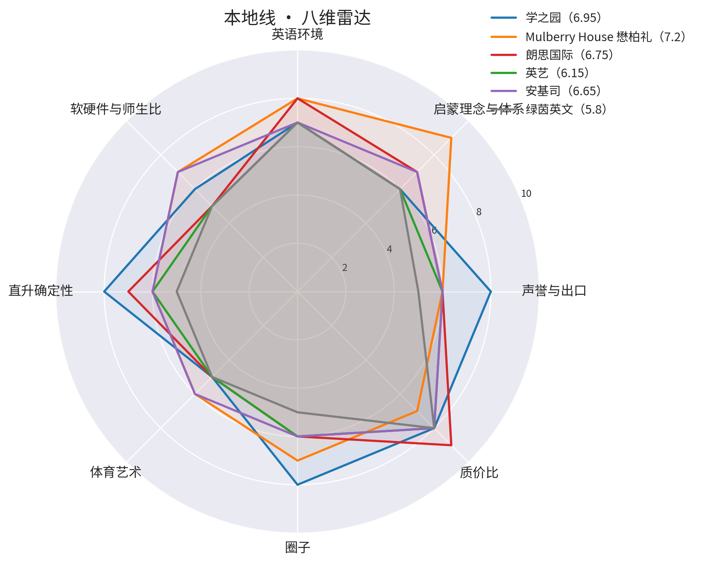
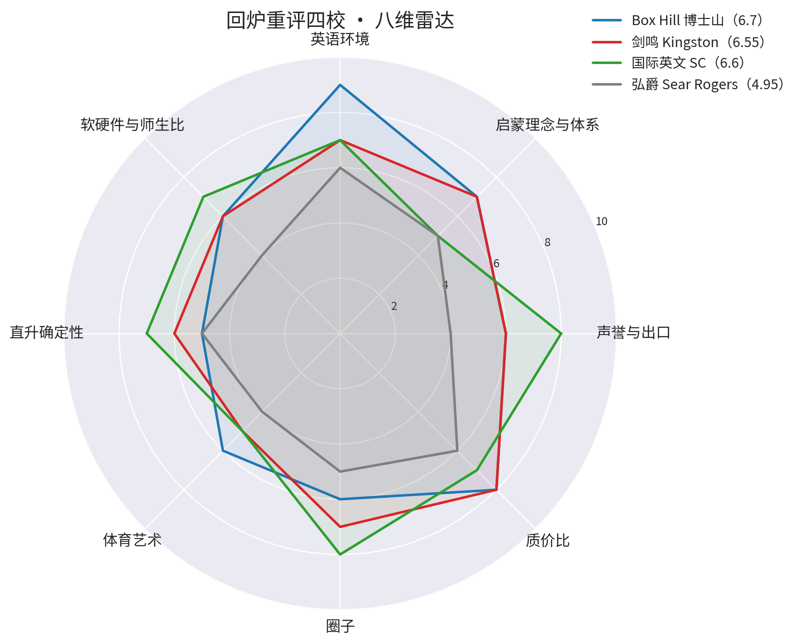
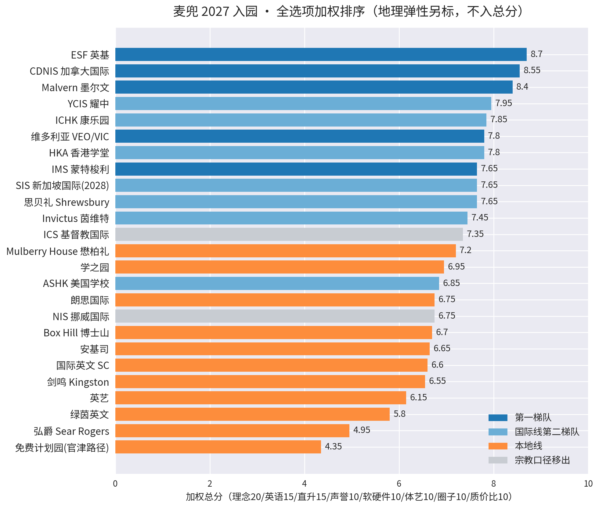
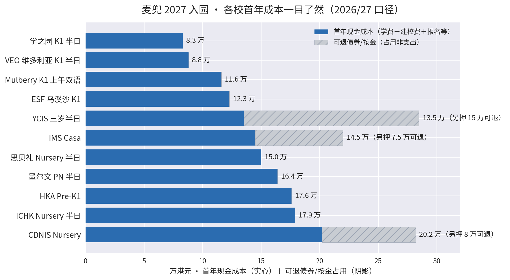

卡片按加权总分排序；左缘色=结论（绿合适/琥珀有条件/灰移出）；八条细杠=八维评分剪影；Malvern 卡片右下角呼吸点=2027 时间锁（今年不进即失去保直升条款）。点卡片进单页。
八维雷达与总排序





八维：声誉与出口 / 启蒙理念与体系 / 英语环境 / 软硬件与师生比 / 直升确定性 / 体育艺术 / 圈子 / 质价比（权重 10/20/15/10/15/10/10/10）。地理弹性单独标注、不进总分——居住定案后按落点重评。依据见各校单页。
💰 成本总账（2026/27 口径，万港元/首年）

| 学校（班别口径） | 学费/年 | 一次性费用 | 每年附加 | 首年现金 | 可退占用 |
|---|---|---|---|---|---|
| 学之园（K1 半日） | 7.9–8.3 万 | — | — | 约 8.3 万 | — |
| VEO 维多利亚（K1 半日） | 88,360 | — | — | 约 8.8 万 | — |
| Mulberry（K1 五日 AM 双语·主流班型） | 10,200/月×11＝11.2 万 | 报名 40＋注册 970（抵首月） | 杂费 1,500＋森林学校 900 | 约 11.6 万 | 保证金 1 个月学费（抵末月，非额外成本）；PM 双语 9.6 万／三日英文 5.8 万可选 |
| Box Hill（马鞍山·K 段） | 约 7.4–8.1 万（官网 7,400/月，待 EDB 批） | — | — | 约 7.7 万 | — |
| ESF 乌溪沙（K1） | 117,900 | NCL 3,800–38,000＋报名 1,500 | — | 约 12.3–15.7 万 | —（50 万债券纯可选） |
| 思贝礼（Nursery 半日·2028 路线） | 117,300 | 报名 2,800 | 建校费 30,000 | 约 15.0 万 | — |
| YCIS（三岁半日） | 约 13.5 万 | — | — | 约 13.5 万 | 债券 15 万（可退） |
| IMS（Casa） | 12.6–16.3 万 | 报名 2,000 | — | 约 14.5 万 | 提名权 7.5 万／债券 10 万 |
| 墨尔文（PN 半日） | 122,001 | — | 建校费 42,000 | 约 16.4 万 | — |
| ICHK（Nursery 半日） | 81,070 | 建校费 75,000＋申请/评估约 2,600 | 建校费 20,500 | 约 17.9 万 | — |
| HKA（Pre-K1） | 约 11.9 万起 | 入学费 25,000＋报名 1,500 | 建校费 32,000 | 约 17.6 万 | —（63 万家庭债券纯可选） |
| CDNIS（Nursery） | 142,780 | 入学费 12,500＋报名 2,350＋评估 1,650 | 资本费 43,000 | 约 20.2 万 | 按金 8 万（可退） |
| 弘立 ISF Pre-School（K1·已弃） | 125,840 | — | 建校费 15,000（半日） | 约 14.1 万 | —（9/9 超预算线，2027 不递） |
全日班口径：墨尔文 PN 全日约 25.1 万/年、ICHK Nursery 全日约 24 万/年（含建校费）。2028 路线参考：SIS 学费 106,100＋建校费 2 万/年＋债券 20 万（可赎回）。弘立 ISF Pre-School 费用待校方书面。口径来源：ESF/CDNIS/ICHK/思贝礼官网 2026/27、墨尔文 SOSOMAMA 2026、学之园/VEO 收费证明书口径；签约前以官网当年价目为准。
读法：首年现金是"真花掉的钱"；阴影占用是债券/按金（退学可退、不计入成本）。ESF 是"便宜且强"，CDNIS/墨尔文的溢价买的是衔接确定性与理念，不为品牌本身付钱。
🏠 居住与搬迁决策（2026-09-09 新增）
| 项目 | 结论 |
|---|---|
| 候选落点排序 | 大埔墟站沿线 ≥ 白石角 > 马鞍山——东铁线一线串 3 个办公点＋罗湖口岸；非站上盖屋苑租金折让 25–30%（白石角 727 呎 3 房 2.38–2.5 万 vs 大围柏傲庄 682 呎 3.55 万）；候选学校在大埔/马鞍山形成集群（墨尔文主校/ICHK/Mulberry/学之园/ESF 乌溪沙/免费线兜底） |
| 决策规则 | 家庭单一现金流（内地收入不延续、太太暂无收入）：收入 <72 万/年留深圳；72 万～税收平衡带之间搬家是消费选择；过平衡带（六年规则触线时）搬家反而净省钱——平衡带 118–174 万/年随生活水平滑动，中等生活 ≈141 万（9/11 三档模型，详见居住·税务测算页） |
| 搬家双闸门 | 单程证批出（预计 2026.12–2027.1）＋ 滚动 3 个月收入 ≥5 万/月 → 2027 Q1–Q2 搬；先短租过渡 1–2 个月确认办公点权重再签长约；只签一年生约，2027 Q4 继续门验证前不签两年死约 |
| 签约 upfront | 两押一付＋半月佣金 ≈ 8.4 万（大埔方案 2.4 万/月）；预缴可谈，目标压到 0–3 个月 |
| 税务切换年 | 2027 自然年：全年内地 <183 天＋经济利益中心移港；六年规则分支待回查 2019–2024 出入境记录后定 |
完整论证见工作区文件：08 居住成本与租房选址分析（电脑本地版）（租金市场核实、通勤矩阵、四方案测算）、09 深港搬迁税务与决策测算（电脑本地版）（183 天×六年规则、三档收入双边税负、三阶段 sequencing）。⚠️ 税务内容为框架性演算，转制年申报须请跨境税务专业人士。
🎯 2027 申请组合与行权闸门（2026-09-09 晚定）
总策略：广撒期权、延迟行权。9–11 月把申请动作全部做完（申请费=小额期权费）；2027 Q1–Q2 offer 落地时按当时收入轨迹 × 学费档位行权（注册缴费=承诺性支出）；最终去向 = 录取结果 ∩ 收入验证 ∩ 参观主观分。学费预算三档线：默认 ≤9 万/年；收入确认 ≥100 万/年放 12–13 万；≥155 万/年才进 15–20 万档。
| 分层 | 学校 | 动作 |
|---|---|---|
| 必递（≤9 万，任何情景可负担） | VEO（K1 10.26 17:00 硬死线＋PN 兜底）／学之园（10.16 截止）／Mulberry（主流 AM 班 11.2 万超线，守线选 PM 班 9.6 万或三日英文班 5.8 万）／Box Hill（新升首要：马鞍山全英沉浸、年费约 7.4–8.1 万、质价比 0.87 仅次 VEO） | 9–10 月递完 |
| 期权（小额申请费买选择权） | ESF（9.30 截止；第一志愿已定：西沙启新书院幼稚园＝直通 RCHK Y1–Y13）／墨尔文 PN（第一阶段 10/13 截止，用户最爱①）／ICHK（全年滚动、11 月面试，用户最爱②） | 行权挂收入闸门：ESF=B 档（≥5 万/月）；ICHK=年化 ≥100 万（首年建校费 7.5 万）；墨尔文=年化贴 155 万轨道 |
| 放弃/缓办 | CDNIS（11 月窗口不递，首年 20.2 万质价比 0.42，2028 插班再评）／弘立（官网费用 125,840＋建校费 ≈ 首年 14.1 万超线，弃）／YCIS（缓，≥100 万再启动） | — |
| 新候选 | HKA 香港学堂（西贡，IB 一贯 Pre-K1 3 岁起→G12，学费约 11.9 万起＋建校费 3.2 万/年＋入学费 2.5 万）——完整性核查发现的唯一实质缺口 | 9/10 已八维评分入榜（7.8 分·第 25 校，期权层，行权=年化 ≥100 万） |
决策树（2027 Q1–Q2 注册季）：A 档 <5 万/月→只行权 ≤9 万组；B 档 5–8 万→可加 ESF；年化 ≥100 万→ICHK 可行权；年化贴 155 万→墨尔文可行权。全灭→免费线兜底＋小一再战。完整预案（含墨尔文 vs ICHK"校园体验时间差"对比、参观七问清单）见 10 申请组合与录取决策预案（电脑本地版）。
📮 申请与参观实况（2026-09-19）
邮件战役：13 校已发，邮箱全部官网核验
| 批次 | 学校 | 结果（校方书面） |
|---|---|---|
| 9/1–9/2 第一批 | ESF／CDNIS／SIS／ASHK／Invictus／墨尔文／弘立／VEO | 8 校全部回复：Invictus 2027 出局、ASHK 出局、SIS 今年无动作（2027.9.30 前递）、弘立 9 月必递、ESF 只在第一志愿排队、墨尔文须报 PN；9/21 书面：2027/28 第一阶段招生已开——申请截止 10/13（周二）、Interactive Experience Session 10/24（周六）、12/11（周五）出结果，10/13 前须交齐申请＋全部支持文件（用户 9/21 拍板：递）、CDNIS 窗口 11.1–11.30；VEO 9/9 书面：K1 申请 9.7 已开 → 10.26 17:00 截止（硬死线）、PN 9.14 10:00 开 → 12.14 截止；PN/K1 均合资格（K1 主申、PN 兜底，K1 有 offer 可退 PN）；证件可后补（offer 后至开学前补齐）；校方主动索取校友证明（成绩表/学生卡/毕业证书/班级照/学生手册任一——用户曾就读康怡校区=VEO 系，随申请附上；9/12 康怡资讯日校方未提及） |
| 9/5 第二批 | 学之园／YCIS／ICHK／思贝礼／Mulberry | 9/7 思贝礼书面回复：确认麦兜落 2028/29 Nursery（cutoff 8.31，差 29 天；该届月龄最大端）；2027.5 起可递申请、2027.9 初 Play-based 评估＋家长面谈；申请可在永居核实进行中递交，开学须持有效签证；邀 10/10 Open Morning（已确认参加）。9/8 二轮回信：Open Morning 报名已确认（两位）；HQP 双语/BIP 英式两路径 Nursery 起在申请表勾选；评估 2027.8 底–9 初按递表顺序排期（5 月开闸即递更稳）。Mulberry 已回（费用修正 9/11 入库）；学之园已回（网申已开、10.16 截止）；ICHK 9/21 书面（Shirley Lam）：Yaonan 2027.8 升 Nursery 年龄合资格 ✓（或 2028/29 Reception）；Nursery 申请现正开放、面试预计 2026.11、校方建议即递（用户 9/21 拍板：递）；附校车路线表（已核实：大埔墟站/大埔中心/大窩/白石角/马鞍山全覆盖，半日班无回程车）；YCIS 待回 |
| 9/9–9/11 第三批 | HKA | HKA 9/20 书面（Joann）：严格执行 8.31 cutoff、无例外——路径：2026/27 可进 Playgroup（满 24 个月）、2027/28 续 Playgroup、2028/29 才进 Pre-K 1（申请 2027 秋开闸，提前 12–18 个月）；证件可先递申请、正式注册前补齐 ✓；校方主动提议 10/12（周一）Playgroup 试课（用户 9/21 拍板：去）。9/24 二轮：试课确认成行，校方要求三项访客登记信息（联系电话/居住地址/陪同成人证件全名），收齐后发具体时间＋校内地点＋携带清单——待用户回复（隐私信息不入本报告）。定位维持期权层/2028 线 |
孩子在校方系统注册名：Yaonan（ICHK 与 Malvern 两校来信一致，2026-09-21 确认）。
✅ 递表材料清单（可打勾；按死线排序）
① ESF 中央申请 · 9/30 硬死线
第一志愿已定：西沙启新书院幼稚园（直通 RCHK Y1–Y13；提交不可改）。校方书面口径：申请只需护照＋出生证，住址证明与孩子签证可后补。
- 孩子护照（现有证件扫描件）
- 出生证
- 申请费 1,500（2026.9 起口径）
- 第一志愿＝西沙启新书院幼稚园（提交前再默念一遍：不可改）
- 香港住址证明 ×2（迁港后补，校方书面同意）
- 孩子签证/永居证明（开学前交）
② ICHK Nursery · 即递（面试预计 11 月）
校方 9/21 书面建议即递；网申 ichkhly.edu.hk。
- 网上申请表提交
- 申请费约 236 美元＋评估费约 102 美元
- 孩子护照/出生证（常规项，以网申表列明为准）
- 校车意向（路线表已核实存档；入学后登记）
③ 墨尔文 PN 第一阶段 · 10/13 硬死线
校方 9/21 书面：10/13 前交齐申请＋全部支持文件；体验课 10/24；12/11 出结果。
- 网上申请提交（校区偏好待 10/10 CC 开放日后定）
- 支持文件按申请表清单备齐（护照/出生证/证件照为常规项）
- 证件办理中状态书面说明（OWP 进行中；该校未书面确认可后补，递交时主动问一句）
- 10/24 Interactive Experience Session 出席
参观日历（均需网上预约）
| 日期 | 场次 |
|---|---|
| 9/10（四）17:00–18:30 | 墨尔文 CC 校区 Info Session（西九龙） |
| 9/12（六） | VEO 康怡资讯日（登记与否待定） |
| 9/19（六）9:00–11:00 | ICHK 康乐园开放日（已参观 ✓）——用户亲历：户外场地与活动内容丰富、环境大加分、社区性强（学校就在康乐园社区内）；印证"新界大地块=环境优势"判断；软硬件维度建议复评上调（待确认） |
| 9/19（六）13:00–15:00 | 墨尔文港岛西开放日（已取消）——9/19 当天邮件通知校方、名额已释放（签到码 A3-134 作废）；改报 10/10 西九龙 Coronation Circle 场 |
| 9/20（日） | ESF Bradbury 小学（已参观 ✓）——用户亲历：ESF 确实不错；但校区众多，目前倾向新界一条龙（启新书院幼儿园＋中小学），因大概率住新界（同预算大埔附近房子更大），也不排除其他校区 |
| 9 月内 | YCIS Stay & Play（窝打老道 151 号；须先参加简介会/体验日，参加者获两岁班优先登记） |
| 10/3（六）10:00–14:00 | 墨尔文大埔主校开放日（白石角）——看"保 Prep 1"通往的校园 |
| 10/10（六）10:00–13:00 | 思贝礼 Open Morning（将军澳石角路 10 号，时间待定；报名已确认·两位）——现场核实：HQP/BIP 两条路径怎么分班、中途能否转轨；同日下午可接墨尔文 CC 场 |
| 10/10（六）13:00–17:00 | 墨尔文 CC 校区开放日（西九龙 Coronation Circle，G09–12，友翔道 1 号）——9/19 已邮件申请改期、两位；须另填校方 REGISTER 表单，以校方确认邮件为准 |
| 10/12（一） | HKA Playgroup 试课（西贡惠民路 33 号）——校方 9/20 主动提议、用户确认参加；2028 线实地考察＋留印象 |
| 10/13（二） | 墨尔文 2027/28 第一阶段申请截止（硬死线）——申请＋全部支持文件须齐 |
| 10/24（六） | 墨尔文 Interactive Experience Session（第一阶段申请者；HKA Exploration Day 同日，已选 10/12 试课、不去） |
| 12/11（五） | 墨尔文第一阶段出结果 |
| 10 月学期内 | CDNIS 主校 Tour＋EYC Tour（官网登记，滚动场次） |
| 10/28（三）8:30–10:00 | ESF 家长资讯环节＋校园参观（join-us.esf.edu.hk；乌溪沙校可单独登记 tour） |
| 预约制 | Mulberry 大埔（WhatsApp 5598 0909） |
结论先行
- 第一梯队（9/20 改分后现行分）：ESF 8.7／CDNIS 8.55／Malvern 8.4（⚠️ 2027 时间锁）／YCIS 7.95／ICHK 7.85（9/19 实地参观后软硬件上调 8.5）／VEO 7.8／IMS 7.65。框架口径不变：地理不作闸门，居住定案后同分按通勤重排。
- 9 月申请季已在执行：14 校邮件全部发出（状态见上表）；9 月必递=弘立 Pre-School＋ESF 中央申请（9.30 截止；第一志愿已定：西沙启新书院幼稚园——直通 RCHK 启新书院 Y1–Y13，PIS 线 70% 永居生源对麦兜更有利）；学之园网申已开（10.16 截止，不等回信直接递）；VEO K1 已开闸、10.26 17:00 硬死线（建议 9 月内递，附康怡校友证明），PN 9/14 开闸后同步递作兜底；新增硬节点：墨尔文第一阶段 10/13 截止、ICHK 即递（11 月面试）。
- 成本已算清（见成本总账）：首年现金 8.3 万（学之园）→ 20.2 万（CDNIS）；债券/按金类可退占用单独标注，不计入成本。
- 班别与身份：默认报 K1、PN 备选（墨尔文例外须报 PN）；思贝礼 9/7 书面确认 cutoff 无弹性、麦兜落 2028/29 Nursery（该届月龄最大端，与 SIS 组"2028 双保险"），2027.5 起递表即可，今年无动作。
- 中介结论不变：麦兜不需要全包中介，见中介分析。
专题
2028 梯队与质价比逐校 2027/2028 班别 ＋ 贵≠好的钱账 ＋ 圈子→ 班别判断与身份联动
PN/K1 逐校 ＋ 单程证三情景→ 免费线保底名单
新界东 10 间 · 非宗教优先序→ 中介必要性分析
Horizon vs 拔萃 vs DIY→ 排除与待重评
转出记录 ＋ 居住定案后重评清单→ 方法与口径 v2
第一性原则框架 ＋ 去广告规则 ＋ 局限→ 居住成本与搬迁税务测算
租金价格带 ＋ 港岛 vs 大埔 ＋ 可负担线 57–114 万 ＋ 税收平衡带 118–174 万 ＋ 三阶段搬家方案→ 本报告的 UI 设计说明
Polanyi 默会知识原则映射→
下一步动作（2026.9–11 窗口）
| 时间 | 动作 |
|---|---|
| 9.1–9.30 | ESF K1 中央申请（只在第一志愿排队、提交不可改；第一志愿已定 9/21：西沙启新书院幼稚园）＋ 弘立 ISF Pre-School（校方书面 9 月必递） |
| 8.1–10.16（已开放） | 学之园 K1 网申（只接受网上报名，面试 11.9–11.10）——不等邮件回复，直接递 |
| 尽快（滚动先到先得） | Malvern MCPS PN 递表（评估 10–11 月；2027 进 PN 是锁定保 Prep 1 的唯一窗口）；ROP145 询问邮件（enquiry@immd.gov.hk） |
| 9–11 月 | 参观季按日历执行（9/19 ICHK＋墨尔文同日两场为重心）；本地线其余各校窗口逐校跑；YCIS／ICHK／Mulberry 滚动递表 |
| 11.1–11.30 | CDNIS Nursery 窗口（一年仅 30 天，校方书面） |
| 2027.9.30 前 | SIS 递表（2028/29 intake，评估约 2027.12）——今年无动作 |
本报告基于公开资料整理（来源见各页），不构成录取承诺；费用与招生口径以学校官方当年公告为准。框架重构 as-of 2026-08-30；校舍复核＋成本总账＋邮件战役回写 as-of 2026-09-05；VEO/学之园书面回写＋居住与搬迁决策 as-of 2026-09-09；申请组合与行权闸门＋Box Hill/弘立费用入库＋HKA 新候选 as-of 2026-09-09 晚；HKA 八维入榜（第 25 校·期权层）＋ESF 乌溪沙校舍事实入库 as-of 2026-09-10；Mulberry 费用修正＋税务三档模型＋墨尔文 9/19 锁定 as-of 2026-09-11；ICHK 9/19 参观回写（用户亲历）＋墨尔文改报 10/10 西九龙场 as-of 2026-09-19；HKA/ICHK/Malvern 三封书面回写＋墨尔文 10/13 死线＋ICHK 校车核实＋ESF Bradbury 参观与启新书院倾向 as-of 2026-09-21。